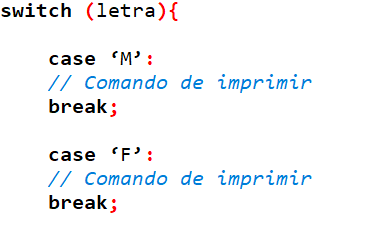
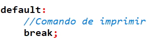
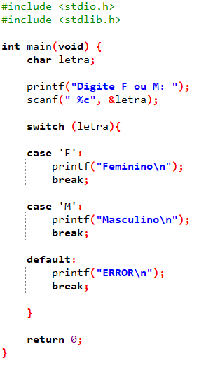

A estrutura switch-case assim com if-else-if são operadores de decisão. Porém o switch-case é utilizado para tomadas de decisão de um código com mais possibilidades de respostas referente ao que o usuário digita, que diferente do if-else-if que possibilita a apenas criar operações menores, (se, senão - if, else). A switch-case traz a mesma forma, com mais possibilidades e de forma reduzida.
Como escrever um código, que define se o que o usuário digitou foi M ou F, sendo M - masculino e F - feminino.
Adicione as tags básicas.
Escreva a variável char com e o nome dela no nosso caso será letra.
Em seguida o comando imprimir e escanear.
Após isso adicione:
Podemos adicionar o default para imprimir “erro”, isso caso o usuário tenha digitado algo que não seja M ou F. Exemplo:
Após isso seu código deve se parecer da seguinte forma:
